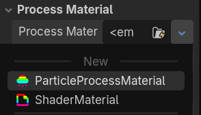
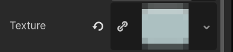
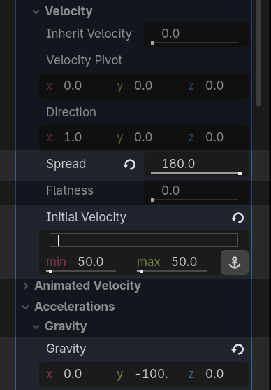
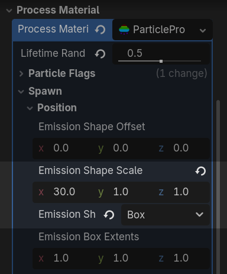
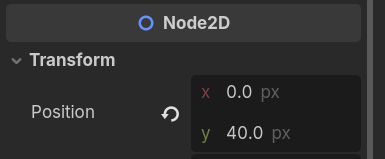
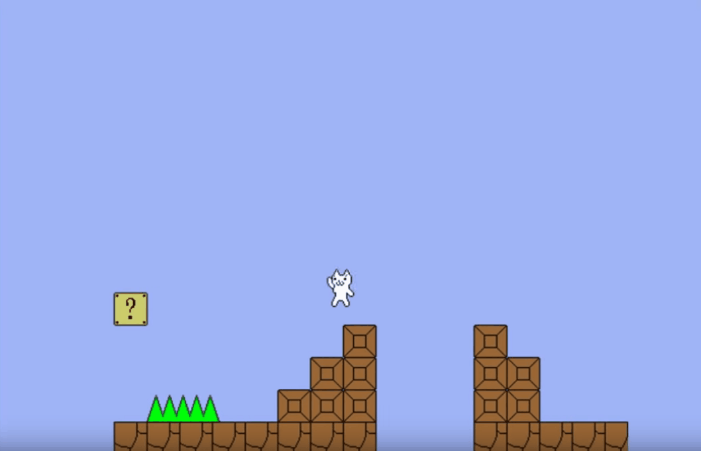
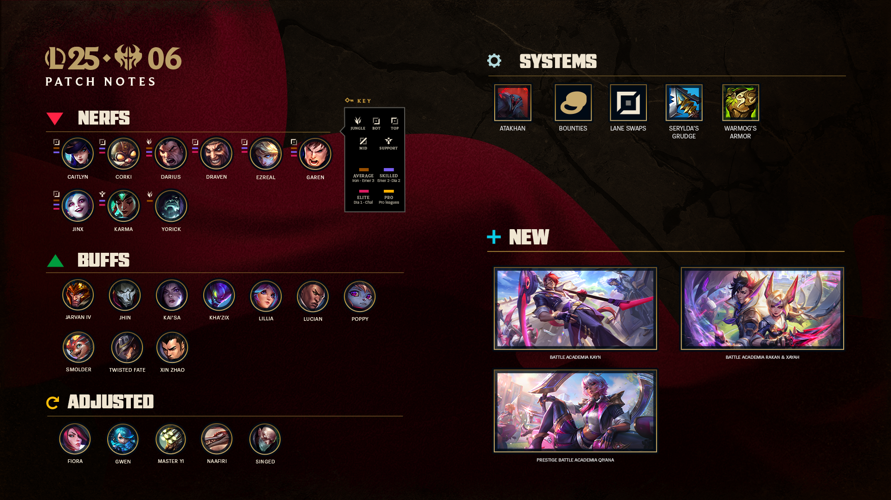

Tutorial 8 - Game Polishing & Balancing
Selamat datang pada tutorial kedelapan, terakhir di mata kuliah Game Development.
Pada tutorial kali ini, kamu akan mempelajari apa yang dimaksud dengan Game Polishing dan Game Balancing, dan juga mengimplementasikannya untuk suatu 2D platformer sederhana. Penasaran? Yuk ikuti tutorialnya 😄
NOTICE
Untuk tutorial kali ini, diperbolehkan menggunakan kode templat proyek game yang telah disediakan di GitHub (klik) ATAU melanjutkan dari yang sudah dikerjakan di tutorial 6 kemarin.
Jika ingin melanjutkan dari tutorial 6, silakan buat branch baru di repositori Git tutorial 6 yang akan berisi hasil pengerjaan tutorial ini (misal: branch
tutorial-8).
Daftar isi
- Tutorial 8 - Game Polishing & Balancing
- Daftar Isi
- Game Polishing
- Latihan 1: Menambahkan Percepatan/Perlambatan untuk Pergerakan Player
- Latihan 2: Menambahkan Partikel Lari
- Game Balancing
- Latihan 3: Balancing Spawn Rate
- Skema Penilaian
- Pengumpulan
- Referensi
Game Polishing
Pengantar: Game Feel dan Polishing
Game Feel adalah konsep abstrak yang menunjuk ke "sensasi" (feel) yang dialami oleh pemain ketika memainkan game. Game feel yang baik memberikan pemain pengalaman yang menarik (engaging) dan "rewarding". Idealnya, game menarik untuk dimainkan bahkan ketika dalam bentuk yang paling sederhana.
Game Polishing adalah proses "meningkatkan" (enhancing) interaksi yang ada di dalam game, misal lewat efek visual, efek suara, animasi, musik, partikel, dan lain sebagainya. Polish adalah salah satu dari enam metrik Game Feel, sehingga proses Game Polishing akan mengubah pengalaman pemain ketika memainkan game.
We can think of polishing as giving more feedback for interactions in the game without changing the underlying system.
Di bagian selanjutnya, kita akan melihat beberapa contoh polishing yang diterapkan di game-game populer:
Contoh: Visual Polishing
Di Celeste (2018), partikel, animasi, camera shake, dan efek visual lainnya digunakan untuk menyampaikan interaksi yang dilakukan oleh pemain dengan game. Contohnya: (1) Berbagai partikel dan animasi ketika karakter digerakkan, (2) camera shake dan partikel ketika karakter tewas, dan (3) partikel pada environment level yang memberitahu arah rintangan arus angin.
Contoh: Sound Polishing
Di Portal 2 (2012), musik secara dinamis berubah sesuai aksi yang dilakukan pemain untuk menyelesaikan level. Hal ini memberikan petunjuk bagi pemain bahwa mereka mendekati solusi dari puzzle. Perhatikan juga berbagai efek audio yang hadir pada tiap interaksi yang dilakukan oleh pemain seperti menembak portal, mengangkat objek, dan menyalakan sensor laser.
Tambahan: Polishing Non-Game Feel
Ada juga yang sifat polishing yang tidak berhubungan dengan "Game Feel" namun tetap berkontribusi memberikan pemain experience yang lebih baik, misal opsi untuk mengubah keybind atau control scheme permainan atau opsi mengubah level audio sesuai tipenya serta mengaktifkan/menonaktifkan subtitel.
Latihan 1: Menambahkan percepatan/perlambatan untuk pergerakan Player
Selama mengerjakan tutorial game development ini, game yang sudah dibuat cukup sederhana. Mulai dari platformer 2D hingga first person 3D sederhana. Namun, ketika dimainkan, game tersebut masih terasa "hambar".
Di latihan ini, kita akan mencoba meningkatkan Game Feel dengan cara menambahkan percepatan dan perlambatan pergerakan untuk pergerakan karakter pemain.
Memperbarui Player.gd
Pertama, buka script Player.gd yang telah disediakan di template (atau gunakan level yang
sudah kamu buat di tutorial 6 sebelumnya). Ubah variabel speed dari tipe int menjadi
float, dan tambahkan konstanta ACCELERATION dan DECELERATION dengan value seperti berikut:
1 2 3 4 5 6 | |
Kemudian, ubah cara penetapan velocity.x di get_input() menjadi menggunakan fungsi lerp()
1 2 3 4 5 6 7 8 9 10 11 | |
Untuk informasi lebih lanjut tentang interpolasi menggunakan fungsi
lerp(), baca dokumentasi di Interpolation — Godot Docs
Sekarang, kita coba mainkan in-game.
Apabila kamu belum melihat perbedaannya, tidak masalah. Kita masih perlu menambahkan polishing untuk memberitahu pemain apakah karakter sedang berlari dalam kecepatan maksimum atau tidak.
Latihan 2: Menambahkan Partikel Lari
Setelah menambahkan mekanik tersebut, kita perlu mengkomunikasikan dengan pemain kapan karakter
sedang "berlari". Kita dapat melakukan ini dengan menggunakan particles yang hanya muncul
ketika velocity Player ekivalen dengan kecepatan maksimum speed.
Apa itu Particles?
Particles merupakan teknik dalam game development untuk menampilkan atau mensimulasikan efek physics yang kompleks, seperti api, asap dari api tersebut, hujan, dan lain-lain. Dengan menggunakan particles, game developer dapat memberikan tampilan visual yang lebih detail dan lebih menarik kepada pemain.
Dalam game engine Godot, disediakan Node particle untuk game 2D yaitu GPUParticles2D.
Kita akan menggunakannya untuk mengimplementasikan trail ketika karakter berlari di level.
Konfigurasi Partikel Lari
Pertama, tambahkan node GPUParticles2D sebagai child node untuk root node di scene Player.
Akan ada warning pada node tersebut karena kita perlu meng-assign properti Process Material
untuk setiap node GPUParticles2D. Buka tab Inspector dan assign ParticleProcessMaterial
baru untuk properti Process Material.

Sekarang kamu dapat melihat partikelmu bejalan, namun tampilannya belum sesuai dengan partikel
lari tujuan kita. Assign properti Texture menggunakan gambar di assets/kenney_platformerpack/PNG/Particles/brickGrey_small.png.

Kembali ke Process Material, buka kategori Velocity dan Accelerations/Gravity.
Supaya partikel muncul ke segala arah dan terbang ke atas (seperti partikel batu
tertendang oleh kaki), ubah Gravity nilai y menjadi -100.
Pada tab Spawn/Velocity terdapat atribut spread dan initial velocity.
Ubah Spread menjadi 180 derajat, dan Initial Velocity menjadi 50.

Selanjutya, supaya partikel tidak hanya muncul dari satu titik, buka kategori
Spawn/Position dan ubah Emission Shape menjadi Box diikuti dengan ubah nilai x
Emission Shape Scale menjadi 30.

Untuk finishing touches, ubah Time/Lifetime menjadi 0.5 dan
nilai y dari Transform/Position menjadi 40 supaya sesuai letak kaki karakter.

Sekarang coba jalankan gamenya.
Menghubungkan Partikel dengan pergerakan Player
Partikel sudah berjalan dan dikonfigurasi, namun kita ingin partikel hanya ada ketika
karakter sedang dalam keadaan berlari (velocity maksimal). Kita dapat mengatur kapan
partikel terpancar dengan mengganti nilai dari atribut Emitting node partikel.
Buka script Player.gd dan tambahkan baris berikut:
1 | |
Lalu, buat fungsi baru untuk memunculkan/menyembunyikan partikel ketika karakter sedang lari atau tidak seperti berikut:
1 2 3 4 5 | |
Terakhir, tambahkan pemanggilan fungsi set_particles() di dalam _physics_process():
1 2 3 4 5 | |
Done! Sekarang particle sudah terlihat seperti trail lari karakter pemain!
Untuk informasi lebih lanjut tentang node
GPUParticles2D, Anda dapat baca dokumentasi di GPUParticles2D — Godot Docs
Game Balancing
Pengantar: Apa itu Game Balancing?
Pada tutorial sebelumnya, kamu sudah mempelajari mengenai basic 2D level design dan membuat suatu level dengan rintangan. Namun, apakah kamu yakin level tersebut sudah pasti bisa diselesaikan oleh pemain? Apakah pemain merasa level terlalu gampang atau kurang menantang? Jika jawaban kamu belum sesuai dengan harapan dari game desainer, maka kamu perlu melakukan Game Balancing pada level tersebut.
Berbeda dengan Game Polishing yang hanya mengubah tampilan dari fitur yang ada di game, Game Balancing mengubah sistem yang ada di game. Hal ini bisa dilakukan dengan memodifikasi Rules, Complexity, Player Progression, Variables, dan lain sebagainya.
Di bagian selanjutnya, kita akan melihat beberapa contoh mengenai game balancing:
Contoh: Balancing untuk Rage Game
Dalam game Cat Mario, level sengaja dibuat sangat susah karena game Cat Mario didesain untuk menjadi Rage Game. Namun dalam pembuatan levelnya, pasti tetap dilakukan balancing agar level yang dibuat dapat diselesaikan oleh pemain dalam keadaan Rage bukan sampai Rage Quit.

Contoh: Perfect Imbalance
Dalam permainan League of Legends, balancing dilakukan setiap saat karena permainan MOBA memang merupakan game multiplayer yang dirancang agar menjadi game yang Perfect Imbalance, dimana balancing dilakukan agar permainan tetap menyenangkan bagi pemain dengan memberikan perubahan meta di setiap patch change-nya.

Latihan 3: Balancing Spawn Rate
Balancing Spawn Rate
Sekarang, kita akan mencoba untuk melakukan balancing pada game yang sudah kita buat. Di template sudah disediakan satu platform dengan rintangan berupa Enemy Spawner.
Terlihat bahwa kita sebagai pemain tidak dapat melewati level karena spawn rate
spawner terlalu agresif, sehingga pemain tidak dapat melompati tikus-tikus yang
ada untuk menuju akhir level.
Salah satu solusi adalah mengubah variabel Spawn Rate dari Spawner. Coba ubah
dari nilai sebelumnya menjadi 5 detik dan mainkan kembali.
Hmmm... pemain sudah bisa melewati rintangan untuk mencapai akhir level. Namun sepertinya hal itu dapat dilakukan dengan cukup mudah. Ingat, kita harus dapat membuat pemain berada dalam FLOW agar pemain tidak merasa permainan terlalu mudah ataupun terlalu sulit.
Oleh karena itu, silahkan bereksperimen nilai Spawn Rate yang menurut kamu tepat untuk game ini.
Setelah kalian menemukan nilai Spawn Rate yang menurut kalian tepat, coba mainkan
kembali untuk memastikan bahwa level sudah balanced.
Selamat, tutorial ini sudah selesai! 🥳
Skema Penilaian
Pada tutorial ini, ada empat kriteria nilai yang bisa diperoleh:
- 4 (A) apabila kamu mengerjakan tutorial dan latihan melebihi dari ekspektasi tim pengajar. Nilai ini dapat dicapai apabila mengerjakan seluruh Latihan.
- 3 (B) apabila kamu hanya mengerjakan tutorial dan latihan sesuai dengan instruksi. Nilai ini dapat dicapai apabila mengerjakan seluruh Latihan.
- 2 (C) atau 1 (D) apabila kamu hanya sekedar memulai tutorial dan belum tuntas.
- 0 (E) apabila kamu tidak mengerjakan apapun atau tidak mengumpulkan.
Pengumpulan
Kumpulkan semua berkas pengerjaan tutorial dan latihan ke repositori GitHub.
Jangan lupa untuk menjelaskan proses pengerjaan tutorial ini di dalam berkas README.md yang
tersimpan di repositori GitHub. Cantumkan juga referensi-referensi yang digunakan sebagai acuan
ketika menjelaskan proses implementasi.
Kemudian, push riwayat commit-nya ke repositori GitHub pengerjaan tutorial 8 dan kumpulkan tautan (URL) repositori GitHub kamu di slot pengumpulan yang tersedia di SCELE. Jika kamu menggunakan kembali repositori GitHub tutorial 6, maka pastikan pekerjaan tutorial ini kamu taruh di dalam branch baru.
Tenggat waktu pengumpulan adalah Jum'at, 1 Mei 2025, pukul 21:00.
Referensi
- 2D particle systems
- GPUParticles2D
- Kenney Assets
- Materi tutorial pengenalan Godot Engine, kuliah Game Development semester gasal 2020/2021 Fakultas Ilmu Komputer Universitas Indonesia.
- Materi tutorial Getting to Release: Game Polishing/Game Feel, kuliah Game Development semester genap 2024/2025 Fakultas Ilmu Komputer Universitas Indonesia.
Created: 2024-02-01 01:30:29